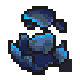
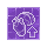

Sin Shard
| This article is a stub. You can help Graveyard Keeper Wiki by expanding it. |
| Sin Shard | |
|---|---|
 | |
General Information
| |
Type :
|
Soul Item |
Stack size:
|
20 |
Source(s)
| |
| Souls room | |
Technical Information
| |
Internal name:
|
Sin_Shard |

Sin Shard is a Better Save Soul DLC item. Decayed souls will become
Sin Shards in Chests, Corpses, etc. The other source of Sin Shards is through soul cleansing with the Soul healer in the Souls room. This workstation can provide several
Sin Shards equal to the used body parts during cleansing operations.
Each Sin Shard stored in a Soul Container passively increases the maximum Soul Gratitude you can store by one.
Souls via the Soul healer will always have either 4 or 7 sins to heal. Thus, healing souls will always give either 4 or 7
Sin Shards. You can double this through the sermon "Prayer for Soul's Thorough Cleansing", giving you either 8 or 14
Sin Shards instead. What causes a soul to have either 4 or 7 sins is how many organs are used to cleanse it.
Sin Shards become a highly important and valuable resource in the late-game as they are necessary to perfect your Graveyard and your Zombies. Through the Organ Enhancer, you can cause all organs, except the Skull and Bone, to give  , including Fat and Blood.
, including Fat and Blood.
The maximum amount of skulls,  or
or  , any organ can have is 3.
, any organ can have is 3.
Flesh and
Skin can be perfected by improving each unit twice in the Organ Enhancer.
Blood and
Fat can be perfected by improving each unit 4 times.
- It will cost 2
Sin Shards to improve a -1 part to a 0 part
part to a 0 part - It will cost another 2
Sin Shards to improve a 0 part to a +1 part - 3
Sin Shards to improve a +1 part to a +2 part - 4
Sin Shards to improve a +2 part to a +3 part
This means that it will cost 11
Sin Shard to perfect 1 unit of
Blood or
Fat, and 7
Sin Shards to perfect 1 unit of
Flesh or
Skin. In total, it will cost 36
Sin Shards to perfect these parts.
Crafting
 Organ Enhancer (Organ Workbench) | ||
|---|---|---|
| Item Produced | Materials Required | Energy |
| +1 |
2-4× Sin Shard* |
- |
| +1 |
2-4× Sin Shard* |
- |
| *Note: The number of shard required depends on the body part type! | ||
| Organ Workbench | ||
| Item Produced | Materials Required | Energy |
| 10× Boost fertilizer I |
10× Peat 2× Sin Shard 2× Hemp |
- |
| 10× Boost fertilizer II |
10× Peat 4× Sin Shard 3× Hemp |
- |
| 10× Quality fertilizer I |
10× Peat 2× Sin Shard 2× Ash |
- |
| 10× Quality fertilizer II |
10× Peat 4× Sin Shard 3× Ash |
- |
| Prayer for souls' repose |
1× Chapter 5× Faith 2× Sin Shard |
- |
| Prayer for souls' contentment |
1× Chapter 4× Faith 2× Sin Shard |
- |
| Prayer for souls' thorough cleansing |
1× Chapter 4× Faith 1× Sin Shard |
- |